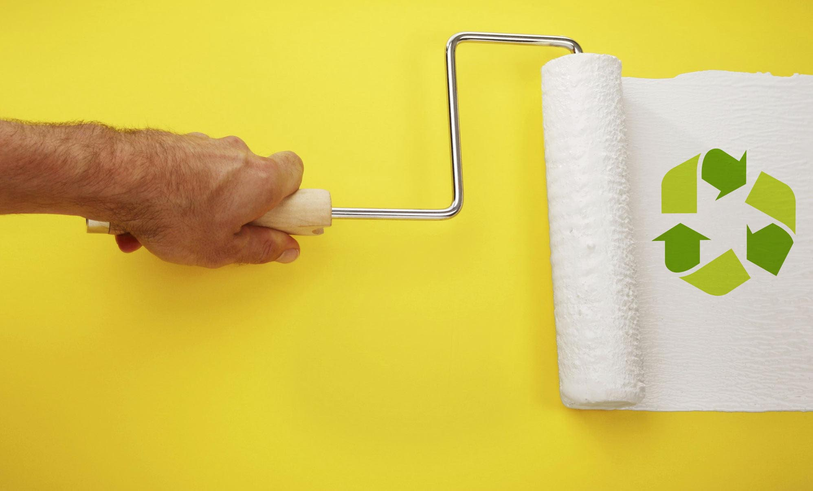

El aloe vera, conocido por sus muchas propiedades, nos sorprende con una nueva aplicación. Los alumnos de la escuela técnica de Salta, Argentina, utilizaron este material para desarrollar una pintura ecológica. Esta planta es abundante en la región y, sumando 2 kilos de cal y 2 tazas de agua podés conseguir un diluido perfecto. Utilizando colorante podés teñir y llegar al color que elijas, y de esta manera ya tenés tu pintura lista para redecorar.
Esta iniciativa surgió luego de que David Aleman, el joven a cargo del proyecto, diera un paseo por su barrio y descubriera que la gran mayoría de las casas estaban despintadas. Esta inquietud le llevó a preguntar el por qué a sus vecinos, obteniendo por respuesta una demanda de pinturas más baratas y sustentables, que se propuso a desarrollar él mismo.
Gracias a este compromiso y al esfuerzo suyo y de sus compañeros, ahora todos pueden pintar su casa de manera económica y ecológica. De esta manera, David nos inspira a mirar un poco más a nuestro alrededor y ver qué necesita el otro. Recordemos que una pequeña ayuda puede generar un gran cambio.